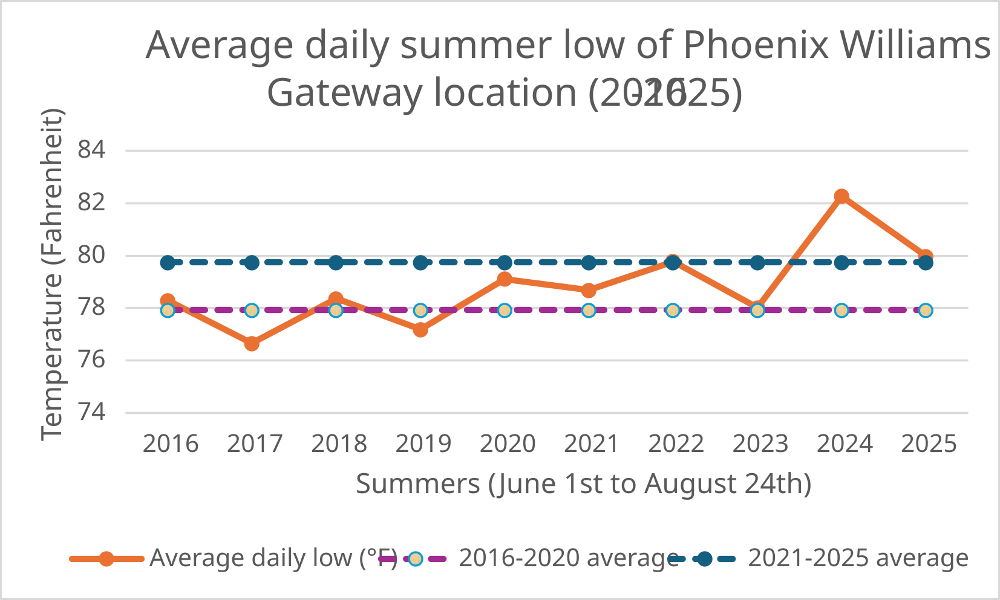
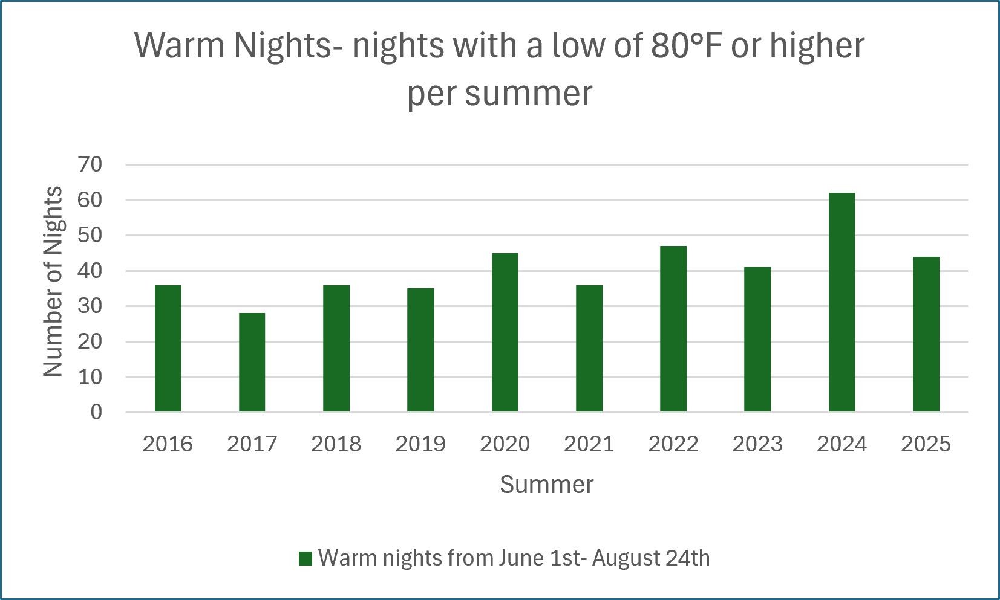

D1 · Story Frame
Data used within this data story comes from the NOAA NCEI Local Climatological Database for Phoenix Williams Gateway Airport(WBAN:23104), which covers hourly observations from January 1, 2016 to August 24, 2025. To keep every year comparable, I used June 1st to August 24th for all of time values in the table. The daily highs and lows are the highest and lowest hourly dry-bulb temperatures recorded during each day. A "warm night" was classified as a day with a low of 80 degrees Fahrenheit or higher. Furthermore, an analysis from one airport alone cannot separate climate change from local urban heat effects. The SVG in D2 section was created using Microsoft Excel with the cited data source while the D4 SVG is handcoded.
D2 · Graphs regarding Temperature Changes


D3 · Accessible Data Table
| Summer | Avg daily high (°F) | Avg daily low (°F) | Warm nights (low > 80°F) | Shares 85 days |
|---|---|---|---|---|
| 2016 | 103.0 | 78.3 | 36 | 42% |
| 2017 | 102.7 | 76.6 | 28 | 33% |
| 2018 | 103.0 | 78.4 | 36 | 42% |
| 2019 | 103.9 | 77.2 | 35 | 41% |
| 2020 | 106.1 | 79.1 | 45 | 53% |
| 2021 | 101.6 | 78.7 | 36 | 42% |
| 2022 | 102.4 | 79.8 | 47 | 55% |
| 2023 | 104.1 | 78.0 | 41 | 48% |
| 2024 | 106.0 | 82.3 | 62 | 73% |
| 2025 | 104.9 | 80.0 | 44 | 52% |
- Source: NOAA NCEI Local Climatological Data, station WBAN:23104 ( Phoenix Williams Gateway Airport), order 4410167: about 122,000 rows of hourly observations from January 1, 2016 to August 25, 2025.
- Note: The daily highs and lows are the highest and lowest hourly dry-bulb temperatures recorded during each day. A "warm night" was classified as a day with a low of 80 degrees Fahrenheit or higher.
- Temperature values: Hourly dry-bulb temperatures in degrees was converted into yearly averages. Any reading that are flagged "s" in the data set was excluded.
- Date window: Only June 1st through August 24th was used because the data file ends on August 25th.
- The daily highs and lows might differ from the daily values because they came from hourly readings.
D4 · Responsive SVG
D5-D6 · System and Documentation
Sources
- National Centers for Environmental Information (NCEI). (2025). Local climatological data station details: Phoenix Williams Gateway Airport, AZ US, WBAN:23104 [Data set, order 4410167]. Climate Data Online (CDO), NOAA. Retrieved October 11, 2026, from NOAA NCEI Local Climatological Data, station WBAN:23104
- U.S. Environmental Protection Agency. (2026, August 18). What are heat islands? Retrieved October 11, 2026, from EPA: What are heat islands?
- U.S. Environmental Protection Agency. (2017, January 17). Climate change: Basic information [Archived web page]. Retrieved October 11, 2026, from EPA climate change basics (archived January 2017)
Note: Test Record and AI disclosure on separate document